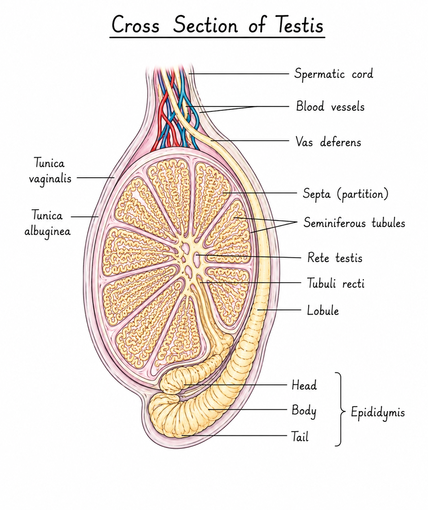
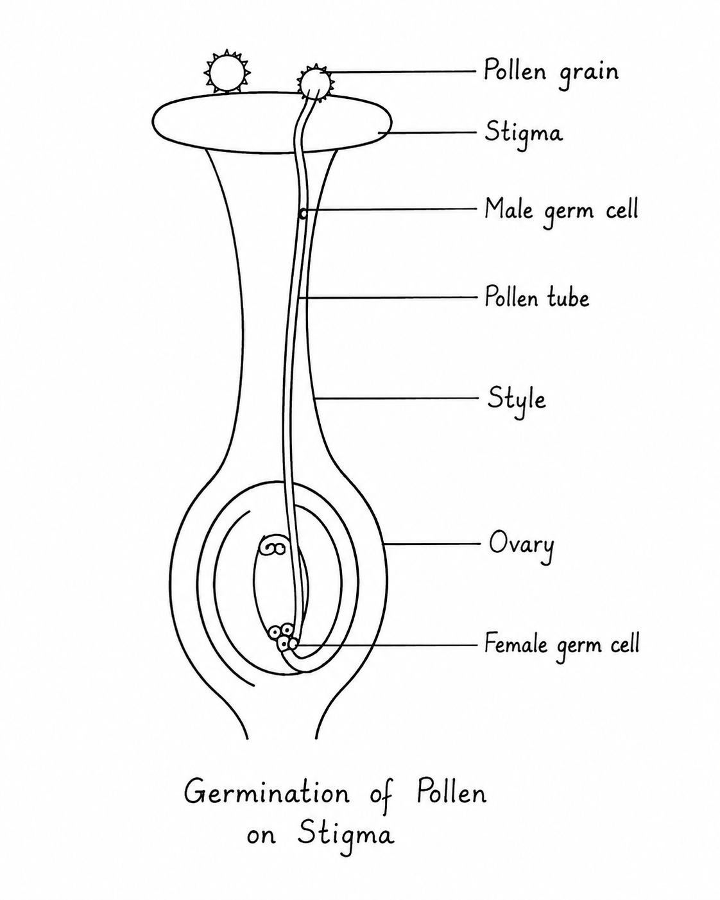

⚠️ VIP ALERT: সিন্ধ্রাণী সাবিত্রী হাই স্কুলের (H.S) লিজেন্ডারি ফাঁকিবাজদের জন্য স্পেশাল প্রিমিয়াম ওয়েবসাইট! সারা বছর বই না ছুঁয়ে জুলাই মাসের ডেডলাইনে তোদের যে করুণ অবস্থা, তা ভেবেই এই সাইটটা বানালাম। এবার আর কষ্ট করে সিলেক্টও করতে হবে না, সোজা 'Copy' বাটনে চাপ দিবি আর খাতায় তুলবি। ছবিগুলো আমি গ্যালারি স্টাইলে সাজিয়ে দিয়েছি, ওগুলো দেখে দেখে নিজের হাতে আঁকতে হবে। সব আমি করে দেবো এমন আশা করলে প্রজেক্টে গোল্লা পাবি!

Penguin Coder
The Developer Who Saved Your Grades 🚀
Practical Experiments
১. স্তন্যপায়ী প্রাণীর শুক্রাশয়ের প্রস্থচ্ছেদ

শনাক্তকারী বৈশিষ্ট্য:
১. প্রস্থচ্ছেদটি একটি পুরু আবরণী দ্বারা আবৃত, যাকে টিউনিকা অ্যালবুজিনিয়া (Tunica albuginea) বলে।
২. এর ভেতরে অসংখ্য গোলাকার বা ডিম্বাকার সেমিনিফেরাস নালিকা (Seminiferous tubules) দেখা যায়।
৩. নালিকাগুলির প্রাচীরে স্পার্মাটোগোনিয়া, স্পার্মাটোসাইট, স্পার্মাটিড এবং স্পার্মাটোজোয়া (শুক্রাণু) বিভিন্ন স্তরে সজ্জিত থাকে।
৪. সেমিনিফেরাস নালিকাগুলির মধ্যবর্তী স্থানে ইন্টারস্টিশিয়াল কোশ বা লেডিগের কোশ (Leydig cells) বর্তমান।
সিদ্ধান্ত: উপরোক্ত বৈশিষ্ট্যগুলির ভিত্তিতে প্রদত্ত স্লাইডটি স্তন্যপায়ী প্রাণীর শুক্রাশয়ের প্রস্থচ্ছেদ।
২. ডিম্বাশয়ের প্রস্থচ্ছেদ

শনাক্তকারী বৈশিষ্ট্য:
১. ডিম্বাশয়ের বাইরের দিকে আবরণী কলার স্তর রয়েছে যাকে জার্মিনাল এপিথেলিয়াম বলে।
২. ডিম্বাশয়ের স্ট্রোমা বা ধাত্রে বিভিন্ন পরিণত দশার ডিম্বথলি বা ফলিকল (যেমন- প্রাইমারি, সেকেন্ডারি ও গ্রাফিয়ান ফলিকল) দেখা যায়।
৩. পরিণত গ্রাফিয়ান ফলিকলের ভেতরে ডিম্বাণু (Oocyte) এবং গহ্বর (Antrum) উপস্থিত।
৪. ধাত্রের মধ্যে করপাস লুটিয়াম (Corpus luteum) বা পীত গ্রন্থি এবং রক্তজালক পরিলক্ষিত হয়।
সিদ্ধান্ত: উপরোক্ত বৈশিষ্ট্যগুলির ভিত্তিতে প্রদত্ত স্লাইডটি স্তন্যপায়ী প্রাণীর ডিম্বাশয়ের প্রস্থচ্ছেদ।
৩. পরাগরেণুর অঙ্কুরোদ্গমের ছবি

শনাক্তকারী বৈশিষ্ট্য:
১. পরাগরেণুর বহিঃস্তর (Exine) কণ্টকযুক্ত বা অমসৃণ এবং অন্তঃস্তর (Intine) মসৃণ প্রকৃতির।
২. রেণুর রন্ধ্র বা জার্মপোর (Germ pore) দিয়ে অন্তঃস্তরটি পরাগনালি (Pollen tube) রূপে নির্গত হয়েছে।
৩. পরাগনালির অগ্রভাগে একটি নালিকা নিউক্লিয়াস (Tube nucleus) এবং তার পেছনে দুটি পুং গ্যামেট বা জনন নিউক্লিয়াস (Generative nucleus) পরিলক্ষিত হয়।
সিদ্ধান্ত: উপরোক্ত বৈশিষ্ট্যগুলির ভিত্তিতে প্রদত্ত চিত্রটি পরাগরেণুর অঙ্কুরোদ্গমের।
৪. পিঁয়াজ, ঘাসফড়িং (Cricket/Grasshopper) মিয়োসিসের বিভিন্ন দশা


শনাক্তকারী বৈশিষ্ট্য (পিঁয়াজের মূল/ঘাসফড়িং-এর শুক্রাশয়):
১. কোশগুলিতে ক্রোমোজোমগুলি স্পষ্টভাবে দৃশ্যমান এবং সমসংস্থ ক্রোমোজোমগুলি জোড় বেঁধে বাইভ্যালেন্ট (Bivalent) গঠন করেছে (জাইগোটিন দশা)।
২. ক্রোমোজোমগুলির মধ্যে কায়াজমা (Chiasma) গঠিত হয়েছে এবং ক্রসিং ওভার পরিলক্ষিত হচ্ছে (প্যাকাইটিন দশা)।
৩. মেটাফেজ-১ দশায় সমসংস্থ ক্রোমোজোম জোড়গুলি বিষুব অঞ্চলে (Equatorial plane) সজ্জিত থাকে এবং বেমতন্তুর সাথে যুক্ত থাকে।
সিদ্ধান্ত: উপরোক্ত বৈশিষ্ট্যগুলির ভিত্তিতে প্রদত্ত স্লাইডটি মিয়োসিস কোষ বিভাজনের বিভিন্ন দশার।
৫. স্তন্যপায়ী ব্লাস্টুলার প্রস্থচ্ছেদ

শনাক্তকারী বৈশিষ্ট্য:
১. ব্লাস্টুলাটি একটি ফাঁপা গোলাকার বলের ন্যায় গঠন।
২. এর বাইরের দিকের একস্তরীয় কোশস্তরকে ট্রোফোব্লাস্ট (Trophoblast) বলে।
৩. ব্লাস্টুলার ভেতরের দিকের গহ্বরটিকে ব্লাস্টোসিল (Blastocoel) বলে যা তরল দ্বারা পূর্ণ থাকে।
৪. ভেতরের একদিকে একগুচ্ছ কোশ পুঞ্জীভূত থাকে যাকে ইনার সেল মাস (Inner cell mass) বা এমব্রায়োব্লাস্ট বলে।
সিদ্ধান্ত: উপরোক্ত বৈশিষ্ট্যগুলির ভিত্তিতে প্রদত্ত স্লাইডটি স্তন্যপায়ী প্রাণীর ব্লাস্টুলার (ব্লাস্টোসিস্ট) প্রস্থচ্ছেদ।
৬. শনাক্তকারী বৈশিষ্ট্য: বায়ুপরগী, জলপরাগী ফুলের বৈশিষ্ট্য ও উদাহরণ

বায়ুপরগী ফুলের বৈশিষ্ট্য (যেমন- ধান, ভুট্টা):
১. ফুলগুলি আকারে ছোটো, বর্ণহীন, গন্ধহীন এবং মকরন্দহীন হয়।
২. পরাগরেণুগুলি প্রচুর পরিমাণে উৎপন্ন হয় এবং এগুলো হালকা, মসৃণ ও শুষ্ক প্রকৃতির হয়।
৩. এদের গর্ভমুণ্ড আঠালো এবং রোমশ বা পালকের ন্যায় হয়, যাতে বাতাসে ভাসমান পরাগরেণু সহজে আটকে যেতে পারে।
জলপরাগী ফুলের বৈশিষ্ট্য (যেমন- পাতাশ্যাওলা বা Vallisneria):
১. ফুলগুলি ক্ষুদ্র, বর্ণহীন ও গন্ধহীন হয় এবং পুষ্পমুকুট মোমের প্রলেপযুক্ত থাকে ফলে জলে ভেজে না।
২. পরাগরেণুগুলি হালকা হয় এবং এদের আপেক্ষিক গুরুত্ব জলের প্রায় সমান হওয়ায় এরা জলের স্তরে ভাসতে পারে।
৩. পুংপুষ্প পরিণত হলে মাতৃউদ্ভিদ থেকে বিচ্ছিন্ন হয়ে জলের ওপর ভাসতে থাকে এবং স্ত্রীপুষ্পের সংস্পর্শে এসে পরাগযোগ ঘটায়।
৭. পরীক্ষাপদ্ধতি: মাটির pH নির্ণয়

পরীক্ষাপদ্ধতি:
১. প্রথমে একটি বিকারের মধ্যে অল্প পরিমাণ মাটি সংগ্রহ করে তাতে পরিমাণমতো পরিশ্রুত জল (Distilled water) মেশানো হলো।
২. একটি কাঁচদণ্ড দিয়ে মিশ্রণটিকে ভালোভাবে নেড়ে কিছুক্ষণ স্থিরভাবে রেখে দেওয়া হলো যাতে মাটির কণাগুলি নিচে থিতিয়ে পড়ে।
৩. উপরের স্বচ্ছ জলীয় দ্রবণটি ফিল্টার কাগজের সাহায্যে ছেঁকে অন্য একটি টেস্টটিউবে নেওয়া হলো।
৪. এরপর ওই দ্রবণের মধ্যে এক টুকরো ইউনিভার্সাল pH পেপার (Universal pH paper) ডোবানো হলো।
৫. pH পেপারের বর্ণের পরিবর্তন লক্ষ্য করে কালার চার্টের (Color chart) সাথে মিলিয়ে মাটির pH এর মান নির্ণয় করা হলো।
পর্যবেক্ষণ ও সিদ্ধান্ত: pH পেপারের রং কালার চার্টের যে মানের সাথে মিলবে, সেটিই ওই মাটির pH (সাধারণত ৬.৫ থেকে ৭.৫ এর মধ্যে থাকলে তা উর্বর মাটি)।
৮. মাটির জলধারণ ক্ষমতা

পরীক্ষাপদ্ধতি:
১. একটি ফানেলের ভেতর ফিল্টার পেপার বসিয়ে ফানেলটিকে একটি মাপনী চোঙের (Measuring cylinder) উপর রাখা হলো।
২. নির্দিষ্ট ওজনের (ধরা যাক, 50g) শুষ্ক মাটি ফানেলের ফিল্টার পেপারের উপর রাখা হলো।
৩. এরপর নির্দিষ্ট পরিমাণ (ধরা যাক, 50ml) জল ফানেলের মাটির উপর ধীরে ধীরে ঢালা হলো।
৪. কিছুক্ষণ পর যখন ফানেল থেকে জল পড়া সম্পূর্ণ বন্ধ হয়ে গেল, তখন মাপনী চোঙে জমা হওয়া জলের আয়তন মাপা হলো।
সিদ্ধান্ত:
মাটির জলধারণ ক্ষমতা = (মাটিতে ঢালা জলের পরিমাণ - চোঙে জমা হওয়া জলের পরিমাণ) / মাটির ওজন × ১০০%।
এর সাহায্যে বিভিন্ন মাটির (বেলে, এঁটেল, দোআঁশ) জলধারণ ক্ষমতা নির্ণয় করা যায়।
৯. দুটি পৃথক জলাশয় থেকে সংগৃহীত জলের স্বচ্ছতার মাত্রা নির্ণয়

পরীক্ষাপদ্ধতি:
১. দুটি পৃথক জলাশয় (যেমন- একটি পুকুর ও একটি দিঘি) থেকে জলের নমুনা সংগ্রহ করা হলো।
২. একটি সেকি ডিস্ক (Secchi disk - যা সাদা-কালো রঙ করা একটি গোলাকার ডিস্ক) একটি দড়ির সাহায্যে জলাশয়ের জলে ডোবানো হলো।
৩. জলের যে গভীরতায় ডিস্কটি আর খালি চোখে দেখা যায় না, সেই গভীরতা দড়ির স্কেল থেকে মেপে নেওয়া হলো।
৪. যে জলাশয়ে সেকি ডিস্ক বেশি গভীর পর্যন্ত দৃশ্যমান, সেই জলাশয়ের জলের স্বচ্ছতা তত বেশি।
সিদ্ধান্ত: এই পরীক্ষার মাধ্যমে পরিষ্কার ও দূষিত বা ঘোলা জলের স্বচ্ছতার পার্থক্য নির্ণয় করা যায়।
১০, ১১ & ১২. কোয়াড্রেট পদ্ধতিতে উদ্ভিদের পপুলেশন অধ্যয়ন

উদ্দেশ্য: নির্দিষ্ট এলাকার উদ্ভিদের পপুলেশন ঘনত্ব এবং ফ্রিকোয়েন্সি শতকরা ভাগ নির্ণয় করা।
পদ্ধতি:
১. 1m × 1m মাপের একটি তার বা কাঠের ফ্রেম বা কোয়াড্রেট তৈরি করা হলো।
২. মাঠের বিভিন্ন স্থানে যথেচ্ছভাবে (Randomly) কোয়াড্রেটটি ফেলে প্রতিটি কোয়াড্রেটের ভেতরের নির্দিষ্ট প্রজাতির উদ্ভিদের সংখ্যা গণনা করা হলো।
৩. অন্তত ১০টি ভিন্ন স্থানে কোয়াড্রেট ফেলে তথ্য সংগ্রহ করে ছকে লিপিবদ্ধ করা হলো।
ঘনত্ব নির্ণয়ের সূত্র:
পপুলেশন ঘনত্ব (D) = কোয়াড্রেটগুলিতে উপস্থিত নির্দিষ্ট প্রজাতির মোট উদ্ভিদ সংখ্যা (N) / পর্যবেক্ষণ করা মোট কোয়াড্রেটের সংখ্যা (S)
ফ্রিকোয়েন্সি নির্ণয়ের সূত্র:
শতকরা ফ্রিকোয়েন্সি (F) = (যে সংখ্যক কোয়াড্রেটে প্রজাতিটি উপস্থিত আছে / মোট পর্যবেক্ষণ করা কোয়াড্রেটের সংখ্যা) × 100%
Project Work
Project 1: জেনেটিক্যালি মডিফাইড অর্গানিজম (GMO)
ভূমিকা:
যেসব জীব বা অর্গানিজমের জিনগত উপাদান (DNA) জেনেটিক ইঞ্জিনিয়ারিং বা রিকম্বিন্যান্ট DNA প্রযুক্তির মাধ্যমে কৃত্রিমভাবে পরিবর্তন করা হয়েছে, তাদের জেনেটিক্যালি মডিফাইড অর্গানিজম বা GMO বলে।
GMO তৈরির পদ্ধতি:
১. কাঙ্ক্ষিত জিন শনাক্তকরণ ও পৃথকীকরণ।
২. রেস্ট্রিকশন এন্ডোনিউক্লিয়েজ এনজাইমের সাহায্যে জিনটিকে কাটা।
৩. ভেক্টর বা বাহক DNA (যেমন প্লাসমিড) এর সাথে লাইগেজ এনজাইম দ্বারা কাঙ্ক্ষিত জিন যুক্ত করে রিকম্বিন্যান্ট DNA (rDNA) তৈরি।
৪. রিকম্বিন্যান্ট DNA-টিকে উপযুক্ত পোষক কোশে (Host cell) প্রবেশ করানো।
৫. ট্রান্সজেনিক জীবের নির্বাচন ও বংশবৃদ্ধি।
গুরুত্বপূর্ণ উদাহরণ:
১. বিটি কটন (Bt Cotton): ব্যাসিলাস থুরিনজিয়েনসিস (Bacillus thuringiensis) নামক ব্যাকটেরিয়ার 'Cry' জিন তুলো গাছে প্রবেশ করিয়ে পতঙ্গ-প্রতিরোধী তুলো গাছ তৈরি করা হয়েছে।
২. গোল্ডেন রাইস (Golden Rice): ভিটামিন এ (বিটা-ক্যারোটিন) সমৃদ্ধ জেনেটিক্যালি মডিফাইড চাল।
সুবিধা:
১. ফলন বৃদ্ধি ও কীটপতঙ্গ বা রোগজীবাণু প্রতিরোধী শস্য উৎপাদন।
২. খরা, লবণাক্ততা এবং চরম তাপমাত্রা সহ্য করতে সক্ষম উদ্ভিদের সৃষ্টি।
৩. খাদ্যের পুষ্টিগুণ বৃদ্ধি (যেমন গোল্ডেন রাইস)।
অসুবিধা:
১. দেশীয় বা স্থানীয় প্রজাতির অবলুপ্তির সম্ভাবনা।
২. মানুষের শরীরে অ্যালার্জি বা পার্শ্বপ্রতিক্রিয়া সৃষ্টির আশঙ্কা।
৩. সুপারউইড (Superweed) সৃষ্টির ভয়, যা দমন করা কঠিন হতে পারে।
উপসংহার:
কৃষি ও চিকিৎসাবিজ্ঞানে GMO-এর অবদান অনস্বীকার্য। তবে পরিবেশ ও মানবস্বাস্থ্যের ওপর এর দীর্ঘমেয়াদী প্রভাব নিয়ে আরও গবেষণার প্রয়োজন রয়েছে।
Project 2: জন্ম নিয়ন্ত্রণ পদ্ধতি (Birth Control Methods)
ভূমিকা:
জনসংখ্যা বৃদ্ধি বর্তমানে পৃথিবীর অন্যতম প্রধান সমস্যা। জনসংখ্যার দ্রুত বৃদ্ধি রোধ করতে এবং অনাকাঙ্ক্ষিত গর্ভধারণ এড়াতে যে কৃত্রিম বা প্রাকৃতিক পদ্ধতিগুলি গ্রহণ করা হয়, তাকে জন্ম নিয়ন্ত্রণ পদ্ধতি বলে।
জন্ম নিয়ন্ত্রণের বিভিন্ন পদ্ধতি:
১. প্রাকৃতিক পদ্ধতি (Natural Methods):
- রিদম মেথড বা সেফ পিরিয়ড: মাসিক চক্রের নির্দিষ্ট কিছু দিন যৌন মিলন থেকে বিরত থাকা।
- কোইটাস ইন্টারাপ্টাস (Coitus Interruptus): বীর্যপাতের ঠিক পূর্বে পুরুষাঙ্গ যোনিপথ থেকে বের করে নেওয়া।
২. প্রতিবন্ধক পদ্ধতি (Barrier Methods):
এই পদ্ধতিতে শুক্রাণু ও ডিম্বাণুর মিলনকে শারীরিকভাবে বাধা দেওয়া হয়।
- কন্ডোম (Condom): পুরুষদের ক্ষেত্রে ল্যাটেক্স রাবারের তৈরি আবরণ, যা শুক্রাণুকে যোনিপথে প্রবেশে বাধা দেয়।
- ডায়াফ্রাম বা সার্ভিকাল ক্যাপ: মহিলাদের ক্ষেত্রে জরায়ুমুখে পরানো হয়।
৩. রাসায়নিক ও হরমোনাল পদ্ধতি (Hormonal Methods):
- ওরাল কন্ট্রাসেপটিভ পিল (Oral Contraceptive Pills): ইস্ট্রোজেন ও প্রোজেস্টেরন হরমোন যুক্ত বড়ি, যা মহিলাদের ডিম্বাণু নিঃসরণ (Ovulation) বন্ধ করে দেয়।
- ইনজেকশন ও ইমপ্ল্যান্ট: নির্দিষ্ট সময় অন্তর হরমোন ইনজেকশন নেওয়া।
৪. ইন্ট্রা-উটেরাইন ডিভাইস (IUDs):
- চিকিৎসকের সাহায্যে মহিলাদের জরায়ুর ভেতর এই ডিভাইসটি স্থাপন করা হয়। উদাহরণ: কপার-টি (Copper-T)।
৫. স্থায়ী বা শল্যচিকিৎসা পদ্ধতি (Surgical Methods):
- ভ্যাসেকটমি (Vasectomy): পুরুষদের ভাস ডিফারেন্স বা শুক্রনালি কেটে বেঁধে দেওয়া হয়।
- টিউবেকটমি (Tubectomy): মহিলাদের ফ্যালোপিয়ান টিউব বা ডিম্বনালি কেটে বেঁধে দেওয়া হয়।
উপসংহার:
জনসংখ্যা নিয়ন্ত্রণে এবং পরিবার পরিকল্পনার জন্য সঠিক জন্ম নিয়ন্ত্রণ পদ্ধতি বেছে নেওয়া অত্যন্ত জরুরি।